I am using the native pipe operator, which is new to R 4.10. This pipe operator is written as a | followed by a >. In this document, the operator is printed as |>, due to the fact that I am using font ligatures. If the pipe doesn’t work for you, simply replace it with the older pipe %>%.
In this post, I’ll show how to use brms to infer the means of two independent normally distributed samples. I’ll try to follow the steps illustrated in the previous post on a principled Bayesian workflow.
Generate data
First, we’ll generate two independent normally distributed samples. These will correspond to two levels of a grouping variable, so let’s call them group A and group B.
Group A will have a mean \(\mu_A = 20\) and a standard deviation \(\sigma_A = 2\), whereas group B have have the parameters \(\mu_B = 16\) and \(\sigma_B = 1.5\).
mean_a <- 20.0
sigma_a <- 2.0
mean_b <- 16.0
sigma_b <- 1.5
true_params <- tribble(~Group, ~Mean, ~SD,
"A", mean_a, sigma_a,
"B", mean_b, sigma_b)
true_params |>
kableExtra::kbl() |>
kableExtra::kable_paper("hover", full_width = T)
| Group | Mean | SD |
|---|---|---|
| A | 20 | 2.0 |
| B | 16 | 1.5 |
We now draw 10 observations for each group.
Since we know the true values that generated the data, we know whether we will be able to successfully recover them. Of course, the sample means and standard deviations will differ slightly from the true values.
funs <- list(mean = mean, median = median, sd = sd)
d |>
group_by(group) |>
summarise(across(everything(), funs, .names = "{.fn}"))
# A tibble: 2 x 4
group mean median sd
<fct> <dbl> <dbl> <dbl>
1 A 19.1 19.1 2.00
2 B 15.7 15.7 1.11Probabilistic model
We assume the data are conditionally normally distributed
\[ y_i \sim \mathcal{N}(\mu_{[j]}, \sigma_{[j]}) \] \[ \text{for J = 1, 2} \]
We will initially assume that the two groups have equal standard deviations (SD), so that we need only estimate one common SD parameter. We therefore need to estimate three parameters in total, \(\mu_a, \mu_b, \sigma\).
Linear model
Using a linear model, we have several possibilities for choosing our contrast coding. We will use treatment coding, in which we choose one of the groups as reference category. This will be represented by the intercept. The other group will not be estimated directly. Instead, the second parameter will represent the difference between this group and the reference category.
We can check the levels of the grouping variable. The first levels will be chose as the reference group.
levels(d$group)
[1] "A" "B"Another possibility is to omit the intercept, and then just estimate both group means independently.
For the first approach, we use the R formula
score ~ 1 + group
score ~ 1 + group# or eqivalently
score ~ group
score ~ groupFor the second parameterization, we write
score ~ 0 + group
score ~ 0 + group# or eqivalently
score ~ group - 1
score ~ group - 1Prior distributions
We can check which for which parameters we need to set priors, and what the default priors are, using the get_prior() function.
get_prior(score ~ group, data = d)
prior class coef group resp dpar nlpar bound
(flat) b
(flat) b groupB
student_t(3, 16.9, 2.5) Intercept
student_t(3, 0, 2.5) sigma
source
default
(vectorized)
default
defaultThe output doesn’t like very appealing, so we can show just the first four columns:
get_prior(score ~ group, data = d) |>
tibble() |> select(1:4)
# A tibble: 4 x 4
prior class coef group
<chr> <chr> <chr> <chr>
1 "" b "" ""
2 "" b "groupB" ""
3 "student_t(3, 16.9, 2.5)" Intercept "" ""
4 "student_t(3, 0, 2.5)" sigma "" "" The three parameters are groupB, represents the difference between group B and the reference category, Intercept, which represents group A, and sigma, the common standard deviation.
Both Intercept and sigma are given Student-t priors. The first parameter of this distribution can be considered as a “normality” parameter—the higher this is, the more normal the distribution looks. The prior on the intercept has a mean of 16.9, which is based on the median of the response variable (median(d$score)) and a standard devation of 2.5. The default priors are guesses to ensure that the posterior is in the raight range, while making it unlikely that the prior biases the inferences.
Something that is not apparent is that the prior on sigma is actually a folded Student-t distribution—this means that the distribution is folded in half, because the parameter sigma is constrained to be positive (a standard deviation must \(>0\).
The prior on the groupB parameter is flat. This is basically never a good idea—you should always choose your own prior, instead of using the default flat prior.
For the second parameterization, we get
get_prior(score ~ 0 + group, data = d)
prior class coef group resp dpar nlpar bound
(flat) b
(flat) b groupA
(flat) b groupB
student_t(3, 0, 2.5) sigma
source
default
(vectorized)
(vectorized)
defaultHere, we get the same statndard deviation parameter, but instead of an intercept we get two parameters, one for each level of the grouping variable. Both have flat priors.
One important difference between the two is that for the second parameterization, both levels are treated in the same manner, whereas for the first approach, the reference get a prior, and the non-reference category is coded as Intercept + groupB. There the mean of group B will be estimated with more uncertainty that that of group A. While this makes sense for hypothesis testing, for estimation this is questionable. McElreath (2020) generally recommends the second approach.
We will ignore McElreath’s advice for now, and estimate mean of group B as Intercept + groupB.
Since we already know from the summary above that the difference between groups cannot tbe very large, we set a normal(0, 10) on the group difference. This expresses the belief that we are about 95% certain that the parameter will lie between \(-8\) and \(8\)
We can use the brms function prior() to do this.
prior(normal(0, 4), class = b)
b ~ normal(0, 4)The priors on the intercept and and group difference look like this:
library(patchwork)
p_intercept <- tibble(x = seq(0, 35, by = 0.01),
y = dstudent_t(x, 3, 16.9, 2.5)) |>
ggplot(aes(x, y)) + geom_line(size = 2) +
ylab("") + xlab("") +
ggtitle("Intercept")
p_groupB <- tibble(x = seq(-10, 10, by = 0.01),
y = dnorm(x, 0, 4)) |>
ggplot(aes(x, y)) + geom_line(size = 2) +
ylab("") + xlab("") +
ggtitle("groupB")
p_intercept + p_groupB
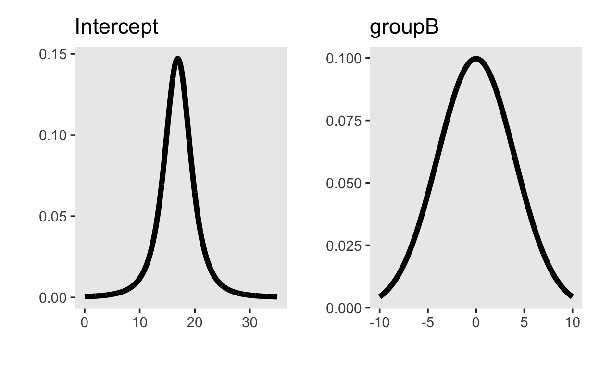
Prior predictive distribution
In order to get the prior predictive distribution, we can first sample from the prior distributions using the sample_prior argument set to "only". If we do this, we are running the same model that we will later use to obtain the posterior distribution, but we are ignoring the data.
This model will do three things: 1) provide prior distributions of the parameters, 2) provide distributions of the conditional means, i.e. the values of the linear predictor and 3) provide samples from the prior predictive distribution.
We can visualize the distribution of parameter values that our model expects using the mcmc_plots() function.
mcmc_plot(m1_prior)

These distributions just reflect the prior distributions, i.e. they are sampled from each parameter’s prior distribution. It is very helpful, though, to plot the conditional means, i.e. the expected means conditioned on group membership.
conditional_effects(m1_prior)
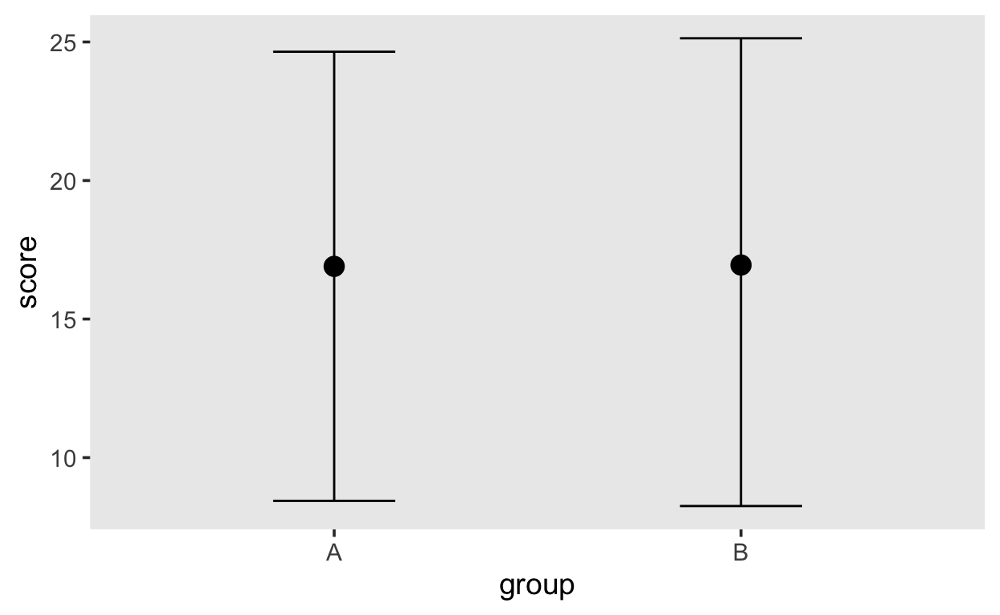
Both groups are expected to have similar means, because that is what we expressed with our prior distribution on the group difference.
Prior predictive checks
We can then add additional variance by incorporating the residual error. This can be achieved by using the posterior_predict() function and then processing the output; however, it is often far simpler to use the built-in function pp_check() (the pp stand for posterior predictive). This function cab perform a variety of posterior predictive checks; here we are simply plotting the density of the data (\(y\)) along with densitites obtained from generated data (\(y_{rep}\)).
If we sample from the posterior, then pp_check() performs posterior predictive checks. If we sample from the prior only, then pp_check() performs prior predictive checks.
This plot can give us a good idea of what kind of data our model expects, and we can compare those to the actual data obtained
pp_check(m1_prior)
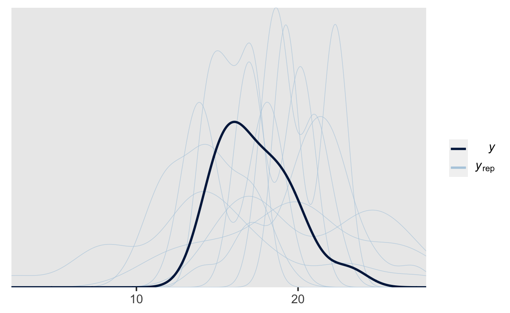
We can also group by our grouping variable to compare the generated data separately by group.
pp_check(m1_prior, type = "dens_overlay_grouped", group = "group")
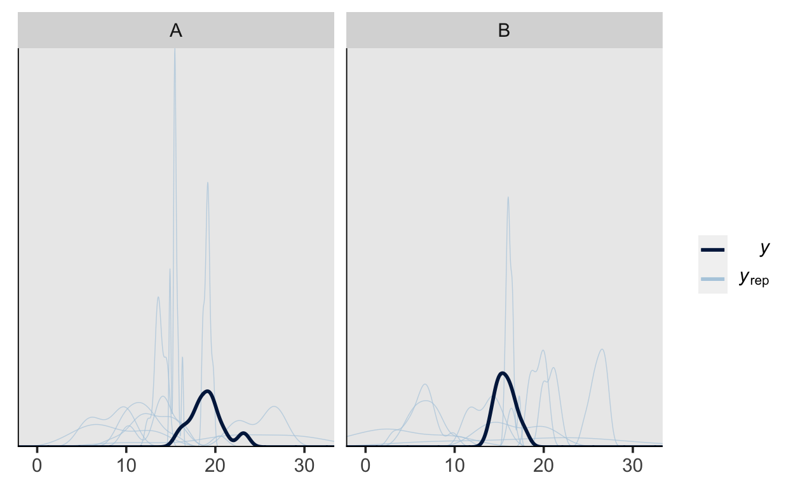
Posterior inference
If we are happy with our model, we can sample from the posterior, using the same model from above, but ommitting the sample_prior argument. As above, brms generated Stan code, which is then compiled to C++. Once the model is compiled, Stan runs 4 independent Markov chains, each of which will explore the posterior distribution. The number of chains can be specified, but it is rarely necesarry to change the default setting of 4.
It is a good idea to use as many cores as possible. Modern computers have multi-core processors. This means that Stan will make use of as many cores as it can, and run the chains in parallel. This will result in a huge speed-up. You can use the argument cores = parallel::detectCores() inside brm() to set this. It advisable to set this in the R options, so that you do have to do this every time you call brm().
Before we look at the parameter estimates, it essential to check that the 4 chains have converged, i.e. that they are sampling from the same posterior. Calling the plot() method on the fitted object will plot traceplots (on the right of the plot), which are the estimates (on the y axis) plotted against the sample number.
plot(m1)
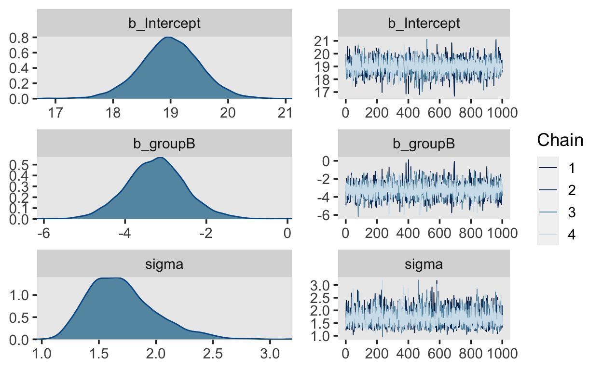
Another way of getting these is with the function mcmc_trace() from the bayesplot package.
library(bayesplot)
mcmc_trace(m1)
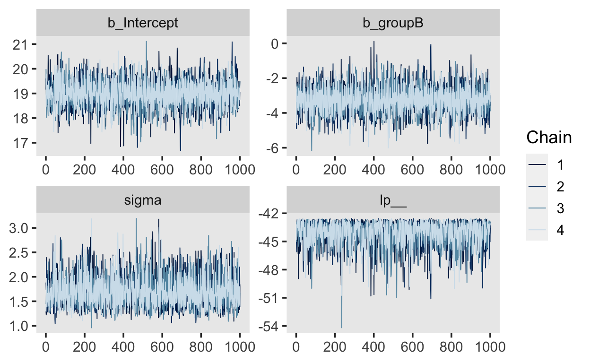
The plots for each parameter show the 4 chains (in different shades of blue). They should not be easily visually distinguishable from each other, and should visually resemble a “fat hairy caterpillar.”
Another method for checking convergence of the Rhat value in the output. There is one for each estimated parameter, and these values should be \(1.0\), or \(> 1.05\). The Rhat statistic measures the ratio of the average variance of samples within each chain to the variance of the pooled samples across chains. If these values are \(1.0\), this means that the chains have mixed well and are sampling from the same posterior.
summary(m1)
Family: gaussian
Links: mu = identity; sigma = identity
Formula: score ~ group
Data: d (Number of observations: 20)
Samples: 4 chains, each with iter = 2000; warmup = 1000; thin = 1;
total post-warmup samples = 4000
Population-Level Effects:
Estimate Est.Error l-95% CI u-95% CI Rhat Bulk_ESS Tail_ESS
Intercept 18.99 0.53 17.94 20.02 1.00 3264 2501
groupB -3.24 0.74 -4.68 -1.72 1.00 3224 2541
Family Specific Parameters:
Estimate Est.Error l-95% CI u-95% CI Rhat Bulk_ESS Tail_ESS
sigma 1.70 0.30 1.24 2.40 1.00 3104 2737
Samples were drawn using sampling(NUTS). For each parameter, Bulk_ESS
and Tail_ESS are effective sample size measures, and Rhat is the potential
scale reduction factor on split chains (at convergence, Rhat = 1).We can now look at the estimated parameters. Here, we get Population-Level Effects and Family Specific Parameters. The population-level effects are our intercept and group difference, the fFamily-specific parameter is the residual standard deviation. For each parameter we are shown the mean of the posterior distribution (Estimate), the standard deviation of the posterior distribution (Est.Error) as well as two-sided 95% credible intervals(l-95% CI and u-95% CI) based on quantiles. The Bulk and Tail ESS (expected sample size) are estimates of how many independent draws would contain the same amount of information as the correlated draws of the posterior (Markov chains obtain correlated draws).
Parameter estimates
The three parameters are Intercept, groupB and sigma. The latter represents the stndard deviation, which according to our model is not allowd to vary between groups (our model is thus mis-specified, as we know that sigma differs between groups.) The posterior is mean is 1.7, with a 95% CI of [1.24, 2.4]. We are thus 95% certain the the standard deviation lies within that interval.
Intercept and groupB reprsent the expected mean of the reference group, which is A in this case, and the difference between groups, respectively.
The intercept has a mean of 18.99, with a 95% CI of [17.94, 20.02], and the difference between groups has a mean of -3.24 with a 95% CI of [-4.68, 1.72].
These are merely summaries of the posterior distributions. It is also very important to look at the full posterior distributions. These can be plotted with the function mcmc_plot().
mcmc_plot(m1)
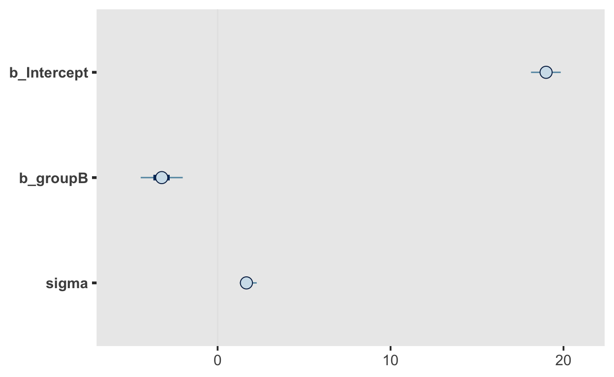
We can also choose which parameters to plot:
mcmc_plot(m1, "b_groupB")
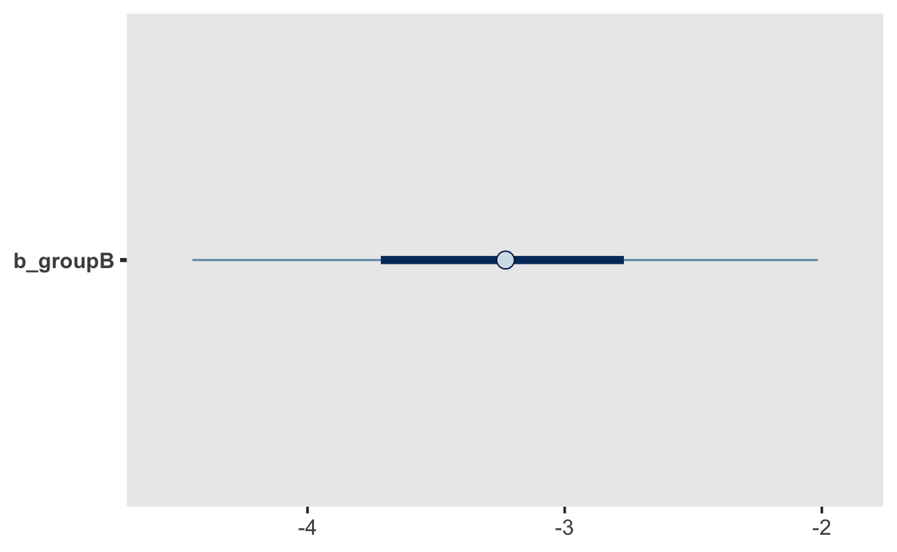
Conditional means
A simple way to obtain the predicted conditional means is to use the the add_fitted_draws() from the tidybayes package.
This requires a grid of values for which we want the conditional means. In the case we use the data_grid() function from the modelr package to create this.
grid <- d |>
modelr::data_grid(group)
grid
# A tibble: 2 x 1
group
<fct>
1 A
2 B We can the use add_fitted_draws() to obtain the values of the linear predictor, which in this case will be either the Intercept for group A, or Intercept + groupB for group B.
grid |>
add_fitted_draws(m1)
# A tibble: 8,000 x 6
# Groups: group, .row [2]
group .row .chain .iteration .draw .value
<fct> <int> <int> <int> <int> <dbl>
1 A 1 NA NA 1 19.2
2 A 1 NA NA 2 19.5
3 A 1 NA NA 3 19.7
4 A 1 NA NA 4 18.1
5 A 1 NA NA 5 18.4
6 A 1 NA NA 6 18.8
7 A 1 NA NA 7 19.1
8 A 1 NA NA 8 19.2
9 A 1 NA NA 9 18.7
10 A 1 NA NA 10 18.5
# … with 7,990 more rowsThese can then be plotted using the stat_pointinterval() function, which takes a .width argument to specify the width of the credible interval.
grid |>
add_fitted_draws(m1) |>
ggplot(aes(x = .value, y = group)) +
stat_pointinterval(.width = c(.66, .95))
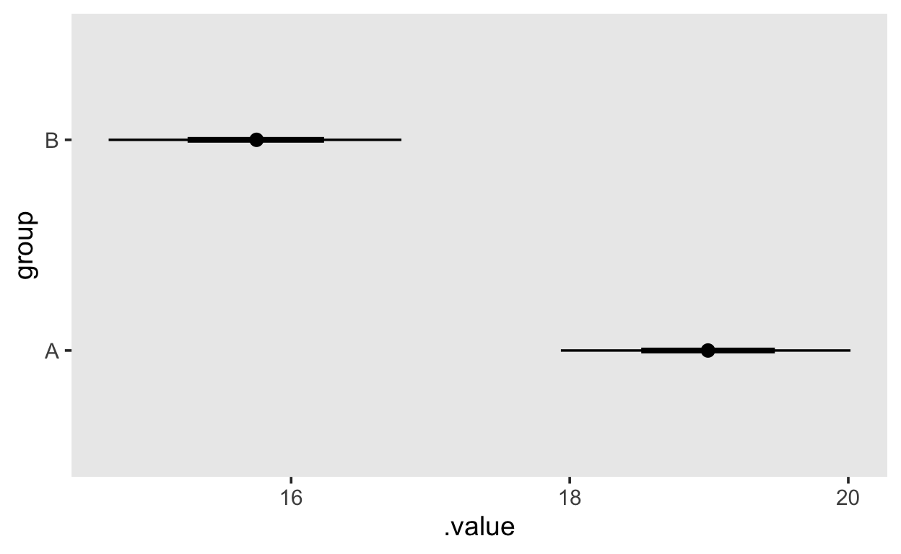
Posterior predictive check
Similarly to above, we can use pp_check(), which will now perform psterior predictive check (because we have sampled from the posterior).
pp_check(m1)
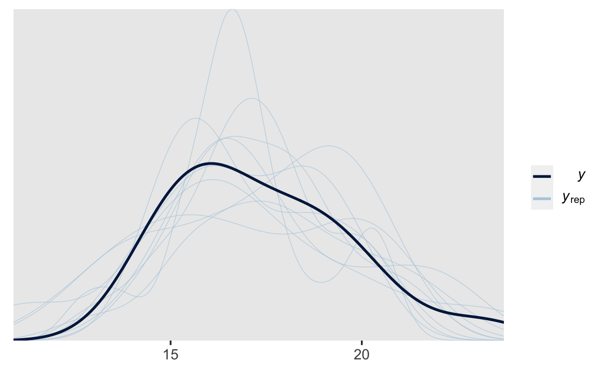
pp_check(m1, type = "dens_overlay_grouped", group = "group")
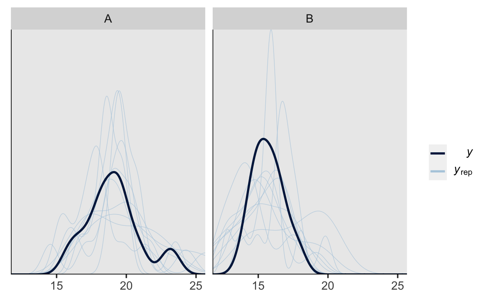
It is apparent the while our model can adequately represent the shape of the data, the predictions vary quite a lot, which is due to there not being enough data (this is only a toy model, after all).
All in one
Using the functions from the tidybayes package, we can plot the conditional exptected means, the posterior predictions for the data along with the actual data, all in one plot.
fits <- grid %>%
add_fitted_draws(m1)
preds <- grid %>%
add_predicted_draws(m1)
d %>%
ggplot(aes(y = group, x = score)) +
stat_interval(aes(x = .prediction), data = preds) +
stat_pointinterval(aes(x = .value), data = fits, .width = c(.66, .95), position = position_nudge(y = -0.3)) +
geom_point() +
scale_color_brewer()
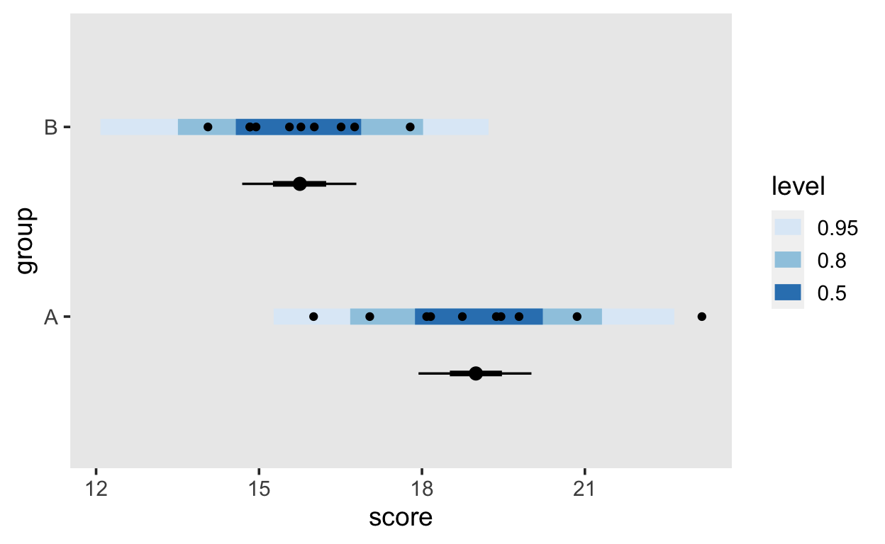
The blue band shows the posterior predictive density for new data (what data does our model predict?), the black dots within the blue bands show the actual data points, and the intervals underneath show the expected conditional means (values of the linear predictor).